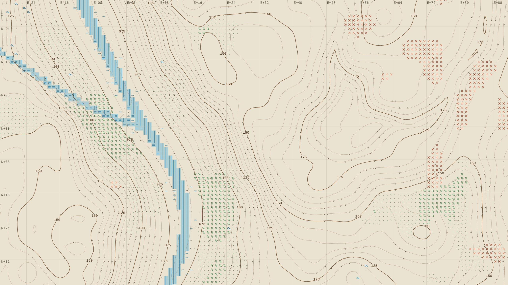

01 • The Architecture of Indifference
Most settlement games are built around imperial benevolence: an all-seeing cursor that moves resources across infinite voids at zero cost, spending floating numbers called "credits" or "influence." TERRAFLUX rejects this abstraction entirely. It operates from a position of radical non-human indifference.
The land does not know the colonists have arrived, nor does it yield to administrative wishes. A ton of felled oak timber has mass, inertia, and frictional drag. Moving it up a 22% grade does not cost abstract numbers; it costs literal human muscular calories, burnt as glycogen, dissipating into body heat. If the slope exceeds the friction angle of clay-loam soil, a wheelbarrow cannot pass. A masonry flume must be carved, or the logs must remain in the mire.
"There is no overseer in TERRAFLUX. There is only thermodynamic accounting. When a worker starves in the deep forest, their body ceases to draw potable water from the cistern. The valve remains open until an engineer walks along the trace and physically turns the iron windlass."
02 • Somatic Metabolism & The Nine Omega Pathologies
Colonists in TERRAFLUX are not sprites or generic work tokens. They possess anatomical profiles derived from physical physiology: Total Body Water (TBW), intracellular hydration, caloric adipose tissue, core rectal temperature, and skeletal muscle mass.
Survival is an equilibrium between external entropy and metabolic homeostasis. As ambient autumn squalls transition into sub-zero winter fronts, uninsulated barracks drain solid fuel at alarming rates. If firewood supplies fail, colonists do not gently fade into statistics; the system triggers explicit physiological collapse cascades:
| Pathology Code | Clinical Manifestation | Somatic Failure Threshold | Logistics Root Cause |
|---|---|---|---|
| Omega-1 | Hypothermic Somatic Arrest | Core Body Temp ≤ 28.5 °C | Thermal failure; solid fuel depletion during cold front |
| Omega-4 | Cachexia & Muscular Atrophy | Adipose ≤ 0.9 kg / Glycogen 0% | Depletion of edible carbohydrate buffer (Bread/Grain) |
| Omega-6 | Fatal Cellular Dehydration | Body Water ≤ 35.0 L (-16.5%) | Raw well freezing or potable water boiling chain severance |
| Omega-8 | Acute Sepsis & Wound Necrosis | Systemic Sepsis > 80.0% | Lack of linen bandaging & quicklime sanitation |
03 • Uncharted Ignorance (Cartographic Vellum)
The game visualizes terrain not as a textured 3D landscape, but as an authentic Trigonometric Survey Sheet. Engraved sepia isolines, topographic benchmarks, and hand-ruled field axes chart elevation gradients directly on the screen.
Fog of war is not a stylized cloud floating above the map; it represents genuine cartographic ignorance. What lies three kilometers northeast across the rapids is completely unknown until surveyor expeditions venture into the wilderness on foot. If a surveyor dies in the high ridge blizzard, their notebooks perish with them. The colony remains blind until a second party recovers the benchmark or retraces the steps.

04 • The Telegraphic Fabric • TFL Console
Orders are not issued through modern radial menus. The frontier is governed via the TFL Command Line Interface — a simulated copper telegraph loop that accepts raw telegraphic syntax to monitor, probe, route, and automate field machinery.
05 • The Seven Tiers of Necessity
Technological progress in TERRAFLUX is charted in The Ledger of Necessity — a 21-node milestone tree spanning seven commission tiers. Unlike games with abstract "research points," milestones cannot be purchased. They require physical manifestation in the territory:
Tier I (First Water) requires tapping the alluvial aquifer with windlass levers; Tier II (Sterilization) demands a closed firewood-to-kettle boiling loop; Tier III (Masonry & Charcoal) requires discovering clay deposits and firing charcoal clamps; ascending through Tier VII (Synthetic Governance) where mercury-switch logic comparators regulate multi-kilometer canal networks autonomously.